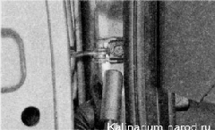
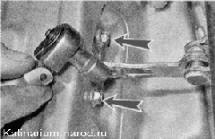
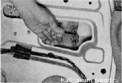

Ограничитель открывания двери снятие и установкаСнятие 1. Снимаем обивку двери . Предупреждение! Во избежание повреждения двери не распахивайте ее после снятия ограничителя. 2. Торцовым ключом на 13 мм отворачиваем болт крепления ограничителя к стойке кузова.  3. Торцовым ключом на 8 мм отворачиваем два болта крепления ограничителя к двери.  4. Извлекаем ограничитель из внутренней полости двери. 
Установка Устанавливаем ограничитель в обратной последовательности, после чего покрываем его любой пластичной смазкой. |